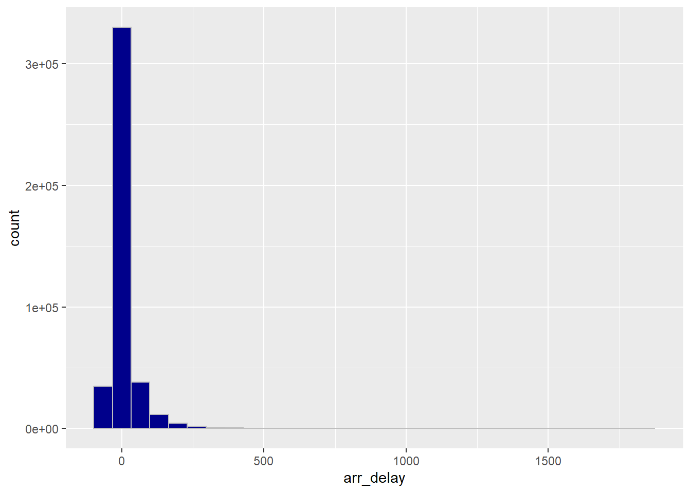
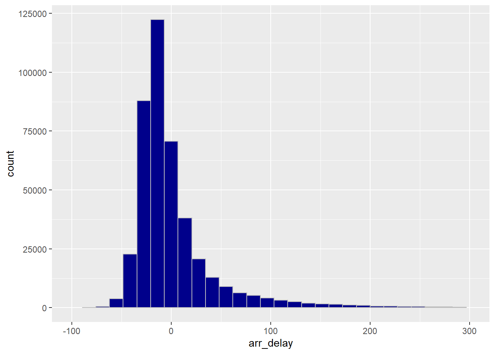
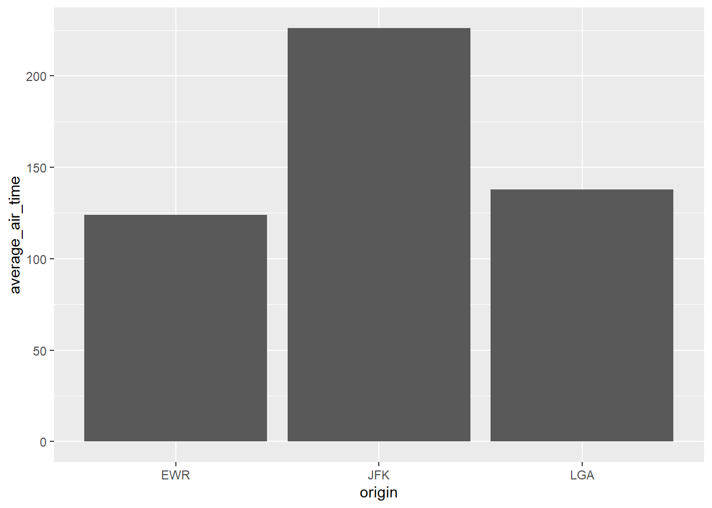
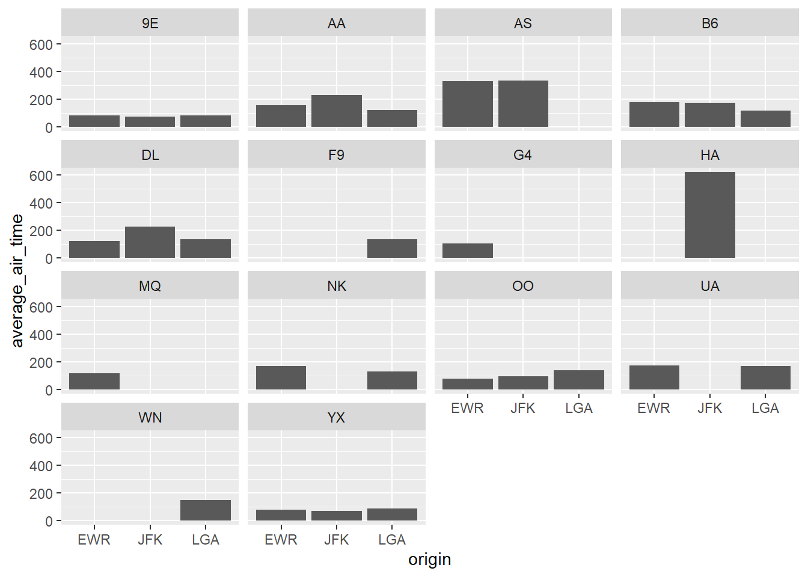

Chapter 4 Wrangle and graph New York City flights
Install the nycflights23 package, containing data on flights in and out of New York City’s airports in 2023.
The package does not contain any functions, just data.
Load the nycflights23 package
view flights
## # A tibble: 435,352 × 19
## year month day dep_time sched_dep_time dep_delay arr_time sched_arr_time
## <int> <int> <int> <int> <int> <dbl> <int> <int>
## 1 2023 1 1 1 2038 203 328 3
## 2 2023 1 1 18 2300 78 228 135
## 3 2023 1 1 31 2344 47 500 426
## 4 2023 1 1 33 2140 173 238 2352
## 5 2023 1 1 36 2048 228 223 2252
## 6 2023 1 1 503 500 3 808 815
## 7 2023 1 1 520 510 10 948 949
## 8 2023 1 1 524 530 -6 645 710
## 9 2023 1 1 537 520 17 926 818
## 10 2023 1 1 547 545 2 845 852
## # ℹ 435,342 more rows
## # ℹ 11 more variables: arr_delay <dbl>, carrier <chr>, flight <int>,
## # tailnum <chr>, origin <chr>, dest <chr>, air_time <dbl>, distance <dbl>,
## # hour <dbl>, minute <dbl>, time_hour <dttm>4.1 Which carriers should travelers avoid?
Analysis goal: which flight carriers should travelers avoid? Let’s explore what goes on at different airports with different carriers.
NYTIMES story about change in delay time!
How often is a flight delayed? This answer may be subjective. Let’s define flight delays as arriving any amount of time after scheduled
Make a histogram of arrival delays. pressing “tab” can open an auto-fill menu
## `stat_bin()` using `bins = 30`. Pick better value with `binwidth`.## Warning: Removed 12534 rows containing non-finite outside the scale range
## (`stat_bin()`).
Let’s limit the graph to the section with the most data
ggplot(flights) +
geom_histogram(aes(x = arr_delay),
fill = "darkblue",
color = "grey") +
xlim(-100, 300)## `stat_bin()` using `bins = 30`. Pick better value with `binwidth`.## Warning: Removed 14636 rows containing non-finite outside the scale range
## (`stat_bin()`).## Warning: Removed 2 rows containing missing values or values outside the scale
## range (`geom_bar()`).
4.2 Data Wrangling
Manipulating data…
Let’s calculate the proportion of delayed flights
- Data wrangling functions are English words that suggest what you’re doing with the data
Create a new column indicating whether flight was delayed
mutate function does this to a dataset.
Below, we calculate a new column, was_flight_delayed and fill it in with TRUE if arr_delay is greater than 0, and FALSE if it is not.
## # A tibble: 435,352 × 20
## year month day dep_time sched_dep_time dep_delay arr_time sched_arr_time
## <int> <int> <int> <int> <int> <dbl> <int> <int>
## 1 2023 1 1 1 2038 203 328 3
## 2 2023 1 1 18 2300 78 228 135
## 3 2023 1 1 31 2344 47 500 426
## 4 2023 1 1 33 2140 173 238 2352
## 5 2023 1 1 36 2048 228 223 2252
## 6 2023 1 1 503 500 3 808 815
## 7 2023 1 1 520 510 10 948 949
## 8 2023 1 1 524 530 -6 645 710
## 9 2023 1 1 537 520 17 926 818
## 10 2023 1 1 547 545 2 845 852
## # ℹ 435,342 more rows
## # ℹ 12 more variables: arr_delay <dbl>, carrier <chr>, flight <int>,
## # tailnum <chr>, origin <chr>, dest <chr>, air_time <dbl>, distance <dbl>,
## # hour <dbl>, minute <dbl>, time_hour <dttm>, was_flight_delayed <lgl>count function counts things!
## # A tibble: 3 × 2
## was_flight_delayed n
## <lgl> <int>
## 1 FALSE 281244
## 2 TRUE 141574
## 3 NA 12534The missing values are cancelled flights! It’s important to investigate NAs: What do they mean? Why are they missing? What should we do with this information in the context of the research question?
4.3 On average, how long are flights delayed?
summarize allows us to calculate summary statistics
## # A tibble: 1 × 1
## average_flight_delay
## <dbl>
## 1 4.34Out of all flights, the average delay is 4.34
But of the flights that are delayed, what is the average delay time?
filter can filter out rows of the dataset
## # A tibble: 141,574 × 19
## year month day dep_time sched_dep_time dep_delay arr_time sched_arr_time
## <int> <int> <int> <int> <int> <dbl> <int> <int>
## 1 2023 1 1 1 2038 203 328 3
## 2 2023 1 1 18 2300 78 228 135
## 3 2023 1 1 31 2344 47 500 426
## 4 2023 1 1 33 2140 173 238 2352
## 5 2023 1 1 36 2048 228 223 2252
## 6 2023 1 1 537 520 17 926 818
## 7 2023 1 1 549 559 -10 905 901
## 8 2023 1 1 605 600 5 906 855
## 9 2023 1 1 611 530 41 923 839
## 10 2023 1 1 619 620 -1 751 745
## # ℹ 141,564 more rows
## # ℹ 11 more variables: arr_delay <dbl>, carrier <chr>, flight <int>,
## # tailnum <chr>, origin <chr>, dest <chr>, air_time <dbl>, distance <dbl>,
## # hour <dbl>, minute <dbl>, time_hour <dttm>Here are just the 141k… flights that were delayed
Shall we now summarize the average delay of the delayed flights ?
## # A tibble: 1 × 1
## average_flight_delay
## <dbl>
## 1 50.3Aha, there’s an average of 50 minutes delay!
What is the average flight delay time for each carrier?
group_by allows you to calculate summaries for subgroups of the data all at once
First, let’s group the flight record by carrier
Next, let’s summarize average delay time
## # A tibble: 14 × 2
## carrier average_flight_delay
## <chr> <dbl>
## 1 9E -2.23
## 2 AA 5.27
## 3 AS 0.0844
## 4 B6 15.6
## 5 DL 1.64
## 6 F9 26.2
## 7 G4 -5.88
## 8 HA 21.4
## 9 MQ 0.119
## 10 NK 9.89
## 11 OO 13.7
## 12 UA 9.04
## 13 WN 5.76
## 14 YX -4.64When data wrangling, we can chain multiple functions together in a sequence
4.4 Pipe Operator
It looks like this: |> ctrl + shift + m (change global options -> code to use this)
The pipe takes the result of whatever is on the left, and inserts it as the first argument to the next function. More efficiently, we can group and summarize all at once.
## # A tibble: 14 × 2
## carrier average_flight_delay
## <chr> <dbl>
## 1 9E -2.23
## 2 AA 5.27
## 3 AS 0.0844
## 4 B6 15.6
## 5 DL 1.64
## 6 F9 26.2
## 7 G4 -5.88
## 8 HA 21.4
## 9 MQ 0.119
## 10 NK 9.89
## 11 OO 13.7
## 12 UA 9.04
## 13 WN 5.76
## 14 YX -4.64We can modify that sequence to also filter by flights that are in fact delayed. Marcus asked about difference between spacing lines out with commas (for many parameters) and spacing out with piping
flights |>
filter(arr_delay > 0) |>
group_by(carrier) |>
summarize(average_flight_delay = mean(arr_delay, na.rm=TRUE))## # A tibble: 14 × 2
## carrier average_flight_delay
## <chr> <dbl>
## 1 9E 43.9
## 2 AA 55.9
## 3 AS 47.7
## 4 B6 58.1
## 5 DL 52.0
## 6 F9 67.5
## 7 G4 43.2
## 8 HA 45.0
## 9 MQ 27.7
## 10 NK 54.7
## 11 OO 60.7
## 12 UA 50.1
## 13 WN 36.8
## 14 YX 39.84.5 Warmup Question
What is the average flight time in the air of Delta flights leaving each of the three NYC airports? Answer with a graph
==is the logical comparison “equals to” whereas=assigns a new value"DL"is in quotes because it is a text string- need to use
mean()inside ofsummarize()because the input is a full dataset, not just a vector list - need to use
geom_col()rather than geom_bar() because we already know the y value. geom_bar() is for when you still need to count the values
flights |>
filter(carrier == "DL") |>
group_by(origin) |>
summarize(average_air_time = mean(air_time, na.rm = TRUE)) |>
ggplot() +
geom_col(aes(x = origin, y = average_air_time))
Lets’s create this column graph for all the carriers Group by both origin and carrier
flights |>
#filter(carrier == "DL") |>
group_by(origin, carrier) |>
summarize(average_air_time = mean(air_time, na.rm = TRUE)) |>
ggplot() +
geom_col(aes(x = origin, y = average_air_time)) +
facet_wrap(~carrier)## `summarise()` has grouped output by 'origin'. You can override using
## the `.groups` argument.